Step 2: Preparing the 3D Mesh(es)
Importing into ZModeler (if the car model is already in ZModeler, skip this part and go down)
Before you can import the car mesh into the game, you must first import it into ZModeler.
To do that, you need to get:
The Car's 3D Mesh(es)
The Car's Texture(s)
Unpacked from the game, using whatever program is necessary, if needed.
Some games, like Racer, have the car's files in a folder, unpacked and ripe for the conversion.
Now, open ZModeler. If you don't have ZModeler, or need to upgrade to the last release of ZModeler, v1.07, go to www.zmodeler2.com.
Click Import
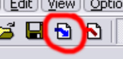
Browse to the 3D Mesh you need to import. If there is more than one repeat the procedure.
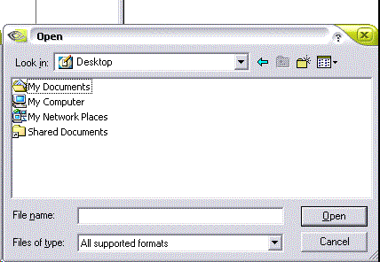
The car model should show up in ZModeler if successful.
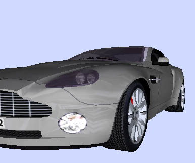
At this time, you need to determine if the windows are supposed to be transparent or not.
If there is a mesh of an interior that fits inside the model perfectly, or if you can see through the windows, then assume the windows are see-through. This may be true of the headlights as well, as seen in this car model. In some instances, the driver might be wearing shades, which will be see-thru as well (although barely see-thru)
First, determine what objects are needed. These will be:
The main body
The Interior
Any mirrors
Any Spoilers
Any extra attachments
You can discard the rest. That may be:
The brake discs
Any Dummies, nulls, nurbs, etc.
Lit-up models
The Wheels
First, take the EXTERIOR models of the highest detail, and Go to Create... Objects... UniteSelect
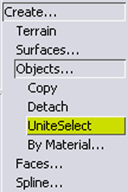
Pick the Square Selection tool
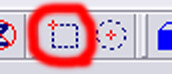
Hide all the other meshes by clicking on their name in the Objects List
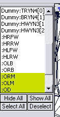
Only the Exterior body parts should now be showing.
Take the selector, and drag a box around the entire body mesh.
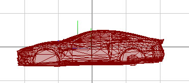
Now, click on the body, and a dialog box shows up asking you to name the new object.
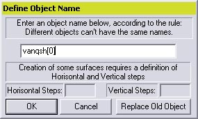
Give a short name, maximum 7 characters, and put a [0] after it. This will make this object the top layer, so you will be able to see through the windows and see the cockpit.
Repeat for the interior, giving the same object name, but put a [1] after the name instead of a [0].
If you wish to have an LOD (level of detail) on the car, you can take the lower detail models, if any, and unite them with a different name. Remember to put the exterior number as [0] and the interior number as [1].
Now, look over the car's mesh. In some cars, there may be a set of brakes that are part of the Exterior, you need to delete these, as they will just get in the way. Go to Modify... Delete
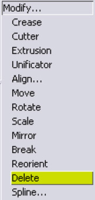
Switch to Faces level
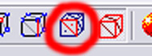
and start hacking!
After you have had your fun deleting faces, its now time to line up the model. Return to Objects level, Select both the Exterior and Interior models, and hit Modify... Move.
Make sure only the Y axis is selected
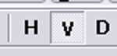
and that SEL mode is on, or you might have bad results.
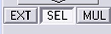
Find the side, front, or rear view, and drag the model up or down until the BOTTOM of the car touches the X or Z axis.
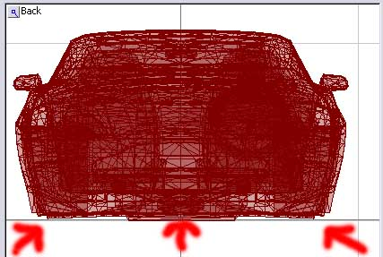
Now, go to the side view, switch on the X axis and switch OFF the Y axis (H on, V off), and with the whole model still selected, line up the wheel wells so the MIDDLE of both wheel wells are the SAME DISTANCE apart from the Y axis.
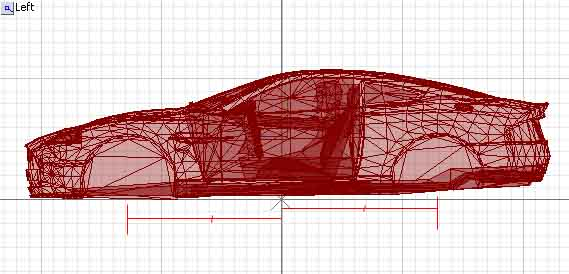
Now is the time to see if you need to chop off anything else.
Highlight ALL the objects you are going to export for the HIGHEST LOD.
Click on Edit... Attributes
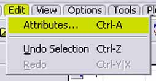
Then, a window shows up.
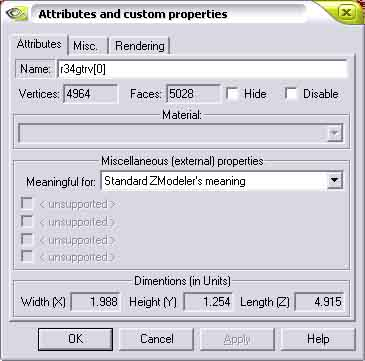
Look near the top, where an un-writable box is next to Vertices:
It is just below 5000! This means this car mesh will fit into Viper Racing!
You will see more of this GT-R later.
Once you are finished here move ONWARD.